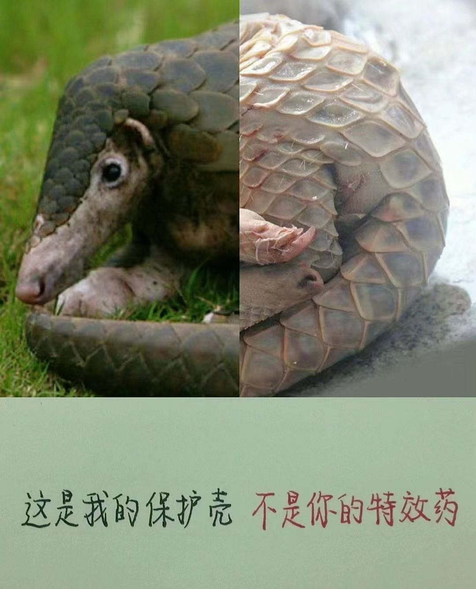
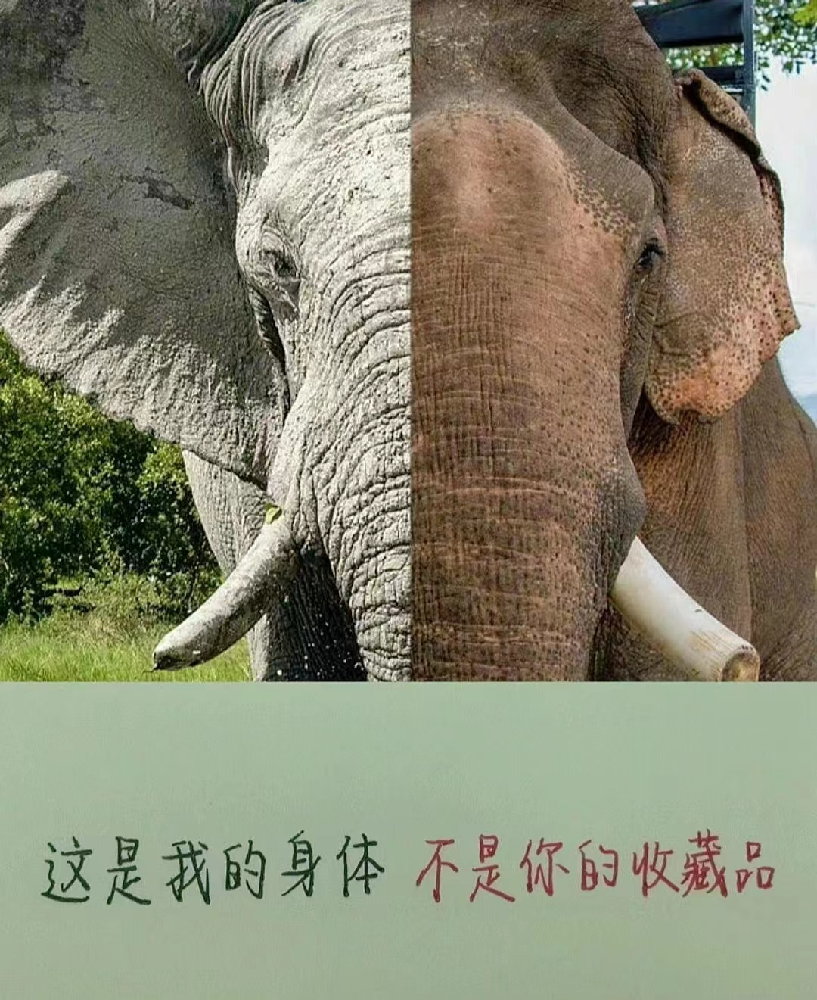
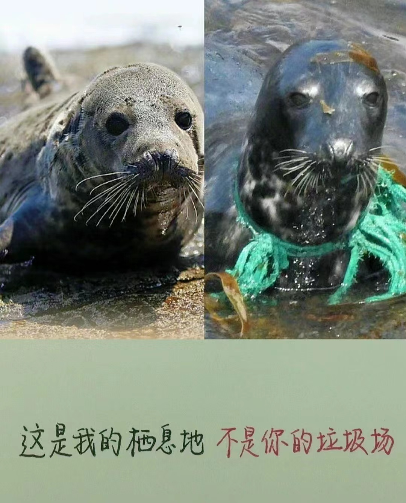
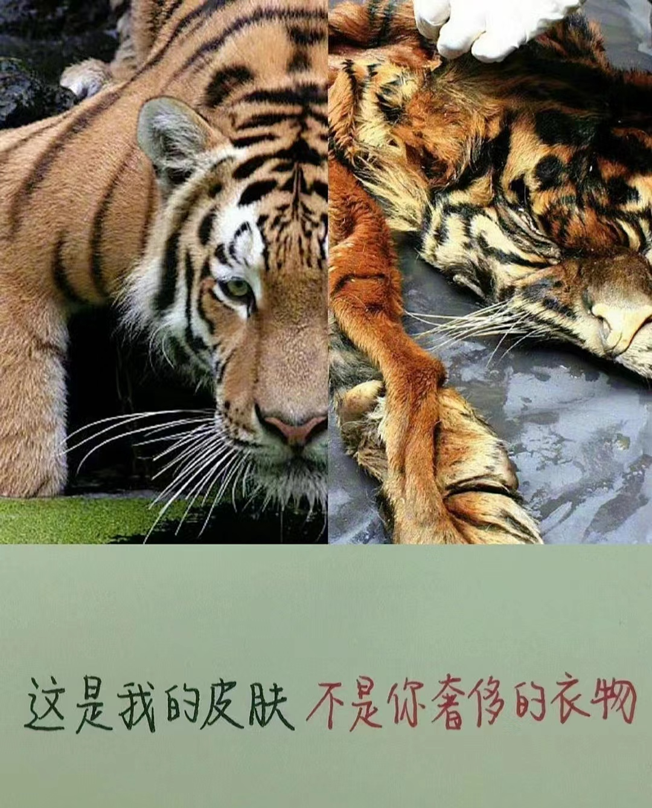
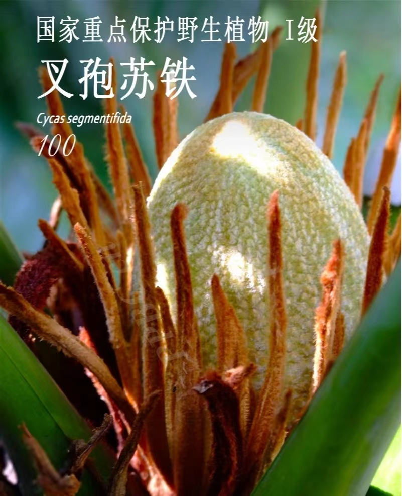
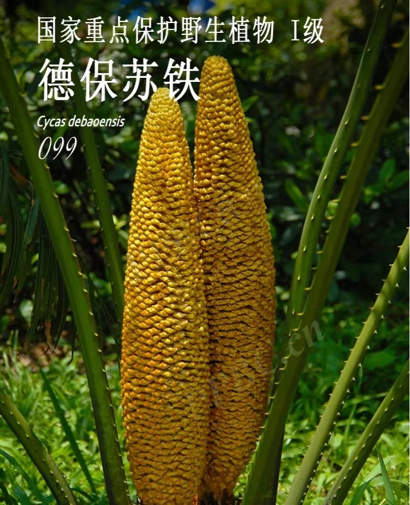
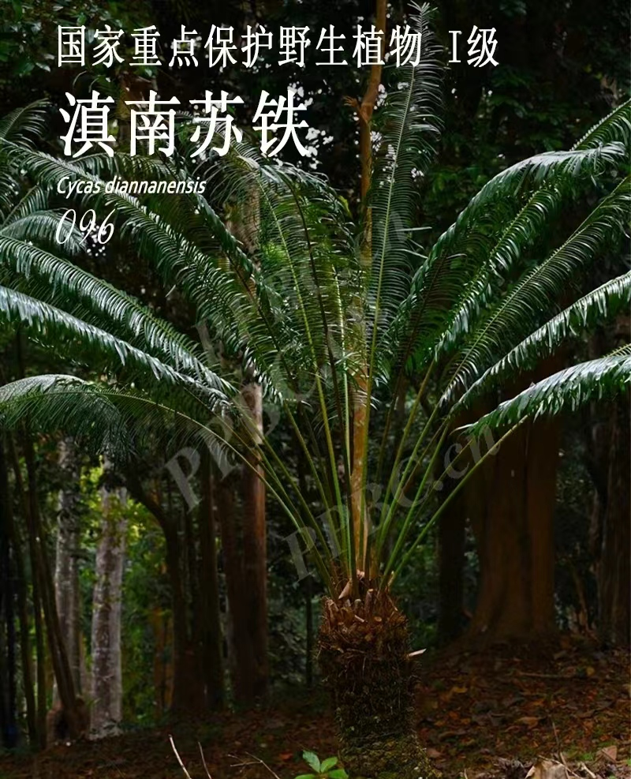
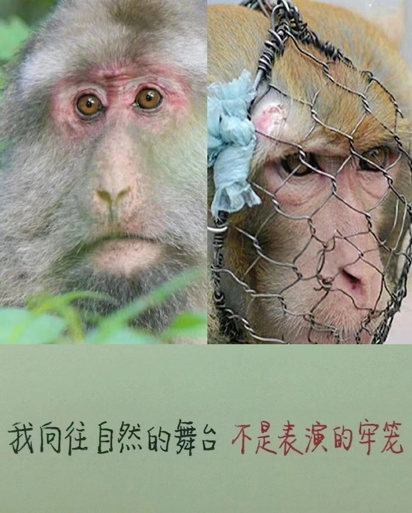

生物的灭绝是一种自然现象。但由于人类的活动，使得生物的灭绝速度加快了。达尔文的自然选择学说告诉我们：适者生存，不适者被淘汰。 大熊猫数量的减少主要有以下原因: 1、由于人类的盲目活动，使其生境遭到破坏，导致其栖息地面积缩减；2、由于生境的破坏，其唯一的食物竹子被大面积破坏，而竹子本身也发生大面积开花现象，所以，食物的减少也是其原因之一;3、熊猫的食物来源单一，只吃竹子，一旦竹子遭到破坏，其生存就会受到影响；4、熊猫本身的繁殖能力降低，其生殖系统受到某些细菌的感染，雌性的产卵率降低，雄性的交配欲望降低，这也是导致熊猫即将灭绝的一大原因；5、熊猫宝宝的存活率较低;6、熊猫对居住地的依赖性较强，对环境变迁的适应性较差。







